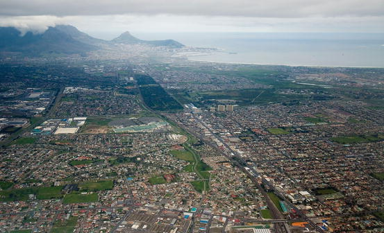
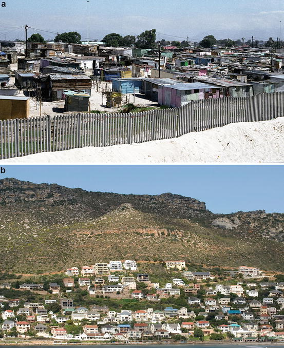
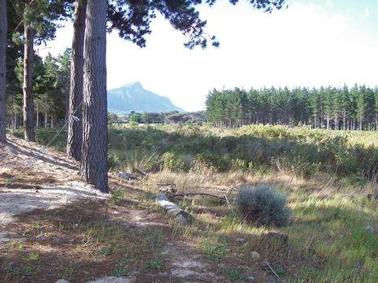
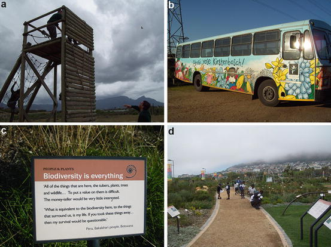
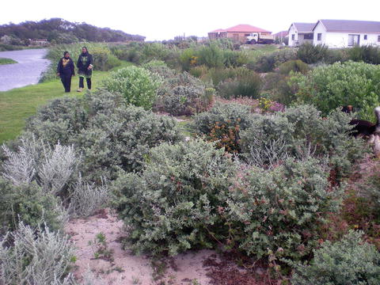

Key Findings
- Cape Town is home to exceptional biodiversity. The city is located in the Cape Floristic Region, the smallest and most diverse floral kingdom on earth. The region hosts almost 9,000 plant species on 90,000 km2, some 44 % of the flora of the subcontinent on a mere 4 % of the land area. There are approximately 3,350 indigenous plant species in the city, of which 190 are endemic to the city itself.
- Cape Town’s biodiversity is under significant threat. Some 450 of the city’s indigenous plant species are listed as threatened or near-threatened, and 13 are known to be extinct. Urban expansion and development is the main culprit, but invasive non-native species and suppressed natural fire regimes also play a role. Conservation targets for national vegetation types indicate that all lowland area vegetation types are poorly conserved, fall below conservation targets, and insufficient remnants remain to conserve representative diversity. Small remnant patches can still contribute to conservation of remaining biodiversity however, and restoration efforts may prove important.
- Future patterns of urban development must be directed to incorporate higher density, consideration for remnant patches of biodiversity, and social justice. The city is characterized by sprawl and prevalence of freestanding single-family homes. Historical planning stratified settlements and access to resources – including green spaces – along racial lines, and these legacies persist.
- While South African environmental policies are robust in their concepts, mechanisms to promote translation of multi-scale policy into practice must be strengthened in order to achieve greater accomplishments for biodiversity. Constraints of budget and conflicting priorities present limitations, and departmental and political affiliations must be bridged. Furthermore, biodiversity must be more effectively streamlined into humanitarian and development concerns in order to receive treatment as a priority.
- Innovative collaborations between citizens, government, and other organizations to address biodiversity and environmental management have proven fruitful in Cape Town, and add a complement to formal conservation areas. Tools for biodiversity conservation and enhancement include evaluation of ecosystem services, biodiversity mapping, and environmental education.
24.1 A Brief History of Settlement
The region around present day Cape Town has been inhabited for at least the last 21,000 years (Deacon 1992), initially by San hunter gatherers, and then from about 2,000 years ago by Khoi herders. The Dutch were the first Europeans to settle in the Cape, where they established a supply station to maintain passing trade ships between Europe and the East. The natural environment, which presented numerous ecosystem services such as the provision of perennial water and abundant wildlife, was a driving factor in all these historic engagements with the region (Anderson and O’Farrell 2012). The transitory vision of the European inhabitants saw dramatic and negative environmental impacts with the formation of large sprawling farms, the systematic removal of timber, altered fire regimes and the early canalization of rivers (Anderson and O’Farrell 2012). Cape Town only really emerged as a town when the area was formally colonized by the British in the early 1800s. Population figures grew rapidly from 45,000 people in 1875, to 67,000 in 1891 and 171,000 in 1904 (Worden et al. 1998). The most dramatic period of urbanization, however, occurred following World War II, when the population of Cape Town grew rapidly to 742,400 people in 1950 (Wilkinson 2000). The repeal of apartheid spatial segregation laws including the Group Areas Act in 1991 opened up the possibility of significant spatial reconfiguration of South Africa’s population and between 1996 and 2001 the number of people in South Africa’s towns and cities increased by 17.2 % (Christopher 2005). Nevertheless, these repealed laws were not always matched by policies to ease integration and desegregation of the urban configuration (Christopher 2005). Over the last two decades, population has climbed steadily to the 3.7 million that inhabit the City of Cape Town today. The configuration of the city continues to be sprawling in nature (Fig. 24.1) and the deep social and spatial divides established through apartheid planning persist (Turok 2001) (Fig. 24.2).
24.2 Biophysical Context to the City of Cape Town
Cape Town’s central business district is located at the northern tip of the Cape Peninsula and the city is Africa’s most southwestern metropole. The region exhibits a Mediterranean-type climate of hot dry summers and wet winters. Rainfall varies dramatically across the city from over 1,000 mm per annum in some places to as little as 350 mm in others, and monthly average temperatures range between 25 °C for January and 17 °C for July (Mucina and Rutherford 2006). The region is biophysically diverse with rivers, wetlands, coastal areas, and different geological substrata. The resultant diversity of habitats supports a variety of flora and fauna and contributes to the high landscape-level diversity.
Cape Town is situated in the Cape Floristic Region, which is the smallest and most diverse of the earth’s six floral kingdoms, and is noted as one of the world’s biodiversity hotspots (Holmes et al. 2008; Myers et al. 2000). The region hosts almost 9,000 plant species on 90,000 km2, some 44 % of the flora of the subcontinent on a mere 4 % of the land area (Mucina and Rutherford 2006). The process of urbanization over the last 350 years has significantly contributed to the erosion of the biodiversity of the region (Anderson and O’Farrell 2012). The vegetation is dominated by fynbos and renosterveld, both of which are types of low, shrubby, and typically fire-prone vegetation (Mucina and Rutherford 2006). The city hosts 19 of 440 National Vegetation Types. Of 21 nationally recognized critically endangered vegetation types, 11 are found in the city (Rebelo et al. 2011). Estimates place the number of indigenous plant species in the city at approximately 3,350, of which 190 are endemic to the city itself. Some 450 of these indigenous plant species are listed as threatened or near-threatened, and 13 are known to be extinct (Golding 2002; Rebelo et al. 2011). Animal numbers, while impressive in their diversity, do not share the same degree of endemism as the plant species in Cape Town (with the exception of invertebrates). Faunal counts in Cape Town yield the following: 83 mammal, 364 bird, 60 reptile, 27 amphibian, and 8 freshwater fish species (Rebelo et al. 2011). Two of the amphibian species are endemic to the city – a relatively high proportion – and ten amphibians are IUCN Red Listed as threatened. Remnant natural environments in the city are highly fragmented with little connectivity. The requirement of fire as a management tool where vegetation must burn on a 10–15 year rotation poses a further significant management challenge in the urban context.
The Table Mountain chain is situated in the heart of the city and, primarily by dint of its topography, has enjoyed a high degree of protection from development and its conservation largely is secured as a National Park. A recent land conflict involving expanding informal settlements on the border, though rapidly quashed, suggests this security may be challenged and contested in future (Fieuw 2011; Jordan 2010). Table Mountain National Park, comprised of 25,000 ha of land and surrounded on three sides by 1,000 km2 of marine protected area, is one of the most significant conservation entities in the city. The lowland areas of the city, where the bulk of the diversity of vegetation types lie, do not share the same degree of protection and are under considerable threat from development. Conservation targets formulated for national vegetation types (Rutherford and Mucina 2006) show that all vegetation types confined to these lowland areas are poorly conserved and currently fall below their conservation targets, and insufficient remnants remain to conserve representative diversity. In these lowland areas there are a number of smaller nature reserves; most of these fall under the management of the City of Cape Town local government, and one reserve is administered by the provincial authority, CapeNature. The scale, number, and connectivity of these smaller reserves do not meet identified conservation goals. Conservation areas in the city are both enjoyed by and pose a number of challenges to local residents. Accidental fires started inadvertently by people may lead to overly frequent and uncontrolled burning, which can threaten people and property. This is particularly relevant in the hot, dry, summer months when strong winds fan the flames (van Wilgen et al. 2012). Remnant lowland areas are generally too small and fragmented to allow effective ecological burns. Animals from conservation areas, in particular baboons, are frequent visitors to adjoining neighborhoods where they scavenge for food and become problematic, leading to typical human-wildlife conflict (Hoffman and O’Riain 2012). Formal housing development is a driver of the ongoing conversion of remnant land. Informal settlement encroaches on both remnant patches and on formal conservation areas, with ensuing removals and complex associated social conflict (Fieuw 2011; Jordan 2010). The extensive network of rivers and wetlands in and around the city has been heavily impacted by the process of urbanization. For example, upper reaches have been cut off from broader systems through poor spatial planning, and lower reaches are heavily polluted. Some systems have been severely modified by inappropriate engineering interventions such as canalization in order to address problems of urban flooding (Brown and Magoba 2009). Water quality standards in terms of public health (recreation) and ecosystem health have not been met for approximately 50 % of city’s river and wetland systems over the past five hydrological years, signaling that water quality is a long-term and significant issue (City of Cape Town 2013). The management challenges of meeting these multiple – and frequently conflicting – anthropogenic and conservation goals are readily apparent.

Fig. 24.1
Cape Town, located on South Africa’s southwestern coast, exhibits a diverse geography of ocean, mountains, lowland vegetated areas, and built environment. The Table Mountain range – including Devil’s Peak, Lion’s Head, and Signal Hill, as depicted here – has remained largely undeveloped due to its steep topography and protected status as a national park. Table Bay, visible in the background, serves as the city’s main port. The city center is nestled between the mountain and the bay. As the city has expanded outward, it has covered much of the depicted lowland areas, the Cape Flats. The remaining patches of open space in this complex city matrix contain some of the most valuable biodiversity remnants. Some of these areas are conserved as nature reserves or are protected under biodiversity stewardship agreements; others remain unmanaged and their fate is yet to be determined. While insufficient remnants remain to conserve representative biodiversity and achievement of connectivity is limited, collaboration and partnerships between communities, government, and other organizations present unique and innovative opportunities to make use of and manage these spaces (Photographed by and published with kind permission of ©Robert Kautsky/Azote 2013. All rights reserved)
24.3 Socio-economic Context
South Africa is a young democracy and one that is dogged by the legacies of apartheid, which manifest in developmental, educational and wealth discrepancies. Cape Town has a population of approximately 3.7 million – about 70 % of the population of South Africa’s Western Cape Province, in some 904,000 households (City of Cape Town 2009c). The city has exhibited an annual growth rate of 3.2 % (for figures between 2001 and 2007, City of Cape Town 2010), which is higher than the national average (Mieklejohn and le Roux 2008). The region can be described as water-scarce and urbanization places huge demands on this limited resource. Since 2000, water demand has on occasion outstripped available supplies, particularly in dry years. In light of this, publicity campaigns and water restrictions have been implemented with successful reductions in demand (Brown and Magoba 2009; City of Cape Town 2013). Despite this success, the rate of urbanization continues to be a major problem and options such as reduction of water wastage and the re-use of grey water must be considered (City of Cape Town 2013). The physical footprint of the city is extensive at 2,460 km2 and characterized by urban sprawl and the stark contrast of middle- to upper-income areas of freestanding houses on large plots adjacent to extensive and rapidly expanding informal settlements (Rebelo et al. 2011) (Fig. 24.2). These informal settlements, and formal historic townships, established during the course of the previous century and enforced through apartheid planning, tend to be on the biodiversity-rich lowlands, also known as the Cape Flats. Following World War II there was a dramatic increase in population and the city expanded in an easterly direction, wrapping around the base of Table Mountain on remaining readily accessible land, to the detriment of the Cape Flats Sand Fynbos and Renosterveld vegetation types (Rebelo et al. 2011) (Fig. 24.1). The adjacent lowland areas to the north were not formally settled until the second half of the twentieth century, when heavy machinery allowed the extensive dune system to be flattened for housing. Much of this took place at the height of apartheid planning in the 1960s and 1970s, and this spurred the bulldozing of much of the Cape Flats Dune Strandveld vegetation; the result was that large areas of dune slack wetlands were populated with low-income housing (Rebelo et al. 2011). These neighborhoods today still experience seasonal inundation and flooding in winter due to the high dune slack water table. These areas were cleared for housing for non-white communities during apartheid and are by-and-large the same communities that occupy them today. These same regions host the city’s informal settlements; collectively, this highlights significant social justice challenges faced by the city. The demand for housing continues to place a significant burden on city authorities and hence on remnant biodiversity in the city.

Fig. 24.2
Cape Town’s built environment is characterized by a wide variety of residential structures, the patterns of which have been shaped by legacies of apartheid planning that demarcated communities along racial lines and stratified distribution of economic wealth and access to resources; this highlights persistent issues of social injustice. Across the city, in all areas and regardless of inequalities, the majority of housing consists of low-density, single-family units. As the city continues to develop, there is a need for planning policies and practices that achieve greater density, while preserving valuable biodiversity and ecosystem services as well as reducing exposure to environmental risk. (a) Shack dwellings are a common residential building type in Khayelitsha, located on the lowland sand dunes of the extensive Cape Flats. The dune areas experience flooding during the winter and are also subject to shifting movement, leading to unstable conditions for residents (Photographed by and published with kind permission of ©André Maslennikov/Azote 2013. All rights reserved). (b) Large single-family homes, embedded in the hillside between the Table Mountain range and the coast, are prevalent in Simon’s Town, which is located on the southeastern side of the Cape Peninsula. Summer wildfires on the nearby mountain and human-wildlife conflict (mainly with baboons) present hazards to residents; storm surge and sea level rise also represent significant vulnerabilities (Photographed by and published with kind permission of ©Robert Kautsky/Azote 2013. All rights reserved)
Poverty is characteristic of Cape Town, where as much as 38 % of households earn less than the Minimum Living Level of US$230 per month (in 2010) (City of Cape Town 2007). The city’s population has a high burden of disease, in particular of HIV and tuberculosis (City of Cape Town 2007). Respiratory conditions are exacerbated by a brown haze (induced by particulate matter attributable to exhaust fumes and smoke from wood burning in informal settlements) which frequently rises in excess of World Health Organization (WHO) levels. Khayelitsha, a township of the Cape Flats and most affected by the brown-haze phenomenon, experienced 86 days in 2006 in which atmospheric particulate matter was above WHO standards (Wicking-Baird et al. 1997; City of Cape Town 2007). Education levels, while better than other areas in the country, are generally low in Cape Town with 58 % of the adult population educated to a standard lower than matriculation (Grade 12) (Statistics South Africa 2010). Unemployment, while again below the national average, is still high at 16.9 % (City of Cape Town 2007).
A recent study into illegal resource harvesting from remnant patches of natural vegetation gives a list of 448 locally occurring species (198 animals and 250 plants) that are harvested and sold. These ecosystem provisioning services support a large informal economy with significant livelihood implications (Petersen et al. 2012). With respect to the formal economy, it is conservatively estimated that for city natural assets, or green infrastructure, there is a flow of services valued at R4 billion per annum (de Wit et al. 2009). Most of this value for Cape Town is created through the tourism industry, but recreation in parks, open spaces, and beaches, as well as specific industries such as film-making also benefit substantially from the services provided by well-functioning ecosystems. Natural landscapes and biodiversity are major drivers in the tourism industry in which, for example, Table Mountain National Park receives 4.2 million visitors a year (UNEP 2009). For additional detailed information on evaluation of ecosystem services in Cape Town, see Chap. 11.
24.4 Emerging Challenges to Biodiversity Conservation and Stewardship in Cape Town
Challenges to the conservation and stewardship of the biodiversity of Cape Town include ongoing land conversion at odds with a biodiversity conservation agenda, suppression of indigenous vegetation by invasive non-native plant species, overexploitation and degradation of natural resources, variable perceptions regarding needs for conservation of biodiversity, and inequitable access to environmental space and resources. Pressure to address development issues of unemployment, poverty, and a significant formal housing shortfall all place considerable demand on remnant vegetation patches, which are highly sought after for conversion to housing or industrial development. Administering to these important humanitarian issues frequently takes precedence over the conservation of the natural environment (Goodness 2013), and this is certainly evident during electoral campaigning. Indeed, there is very little evidence of an understanding that green space or biodiversity is linked to human wellbeing, and there is a lack of vision for finding synergies between pressing environmental and humanitarian issues (Goodness 2013). Perceptions around the validity of conservation vary, and the large, highly-visible tract of conserved land in the heart of the city, Table Mountain (which conserves only a few of the already better-conserved vegetation types), drives a misconception that biodiversity is well-protected in the city. Generally, perceptions around remnant vegetation and biodiversity conservation vary. Remnant patches do play a significant utilitarian role where people enjoy the cultural ecosystem services of these areas for recreation, ceremonial, and aesthetic purposes. While in some instances there is considerable civic support for biodiversity initiatives (Pitt and Boulle 2010; Ernstson 2013a), in other cases the indigenous vegetation is seen as unappealing and other landscape forms, for example non-native tree plantations, are viewed as preferable (Ernstson 2013b; Van Wilgen 2012) (Fig. 24.3). In a city with a high crime rate (City of Cape Town 2007), wilderness areas are frequently perceived as dangerous and perceptions around remnant patches can be negative (Holmes et al. 2008; Goodness 2013).

Fig. 24.3
Varied perceptions and sentiments exist in regard to biodiversity in Cape Town, and negotiation of these issues is complex. In some cases, there is considerable support for native biodiversity, while in others, alternative landscape forms are preferred. In one example, an accidental fire in the Tokai forest (a plantation consisting of non-native pines, but historically present since 1885) triggered the sprouting of dormant fynbos seeds and reemergence of native fynbos vegetation. Cape Town residents were divided in their opinions on which landscape form should prevail. Those in favor of fynbos cited the benefits bestowed by restoration of precious native biodiversity and reduction in stress to the water table (through elimination of water-thirsty pines). Those in favor of the tree plantation countered the “native biodiversity” argument with the long-standing historical record and cultural value of the pines, and listed benefits of recreational activities such mushroom harvesting and walking beneath a shaded canopy. The debate is ongoing; this exhibits some of the tradeoffs between biodiversity conservation and ecosystem service agendas (Ernstson 2013b). In the photograph, an area of restored fynbos is visible amidst plantation pines (Photographed by and published with kind permission of ©Julie Goodness 2013. All rights reserved)
The high turnover in diversity both within and between vegetation types (i.e., beta diversity) means that small remnant patches can make significant contributions to biodiversity conservation. The Spatial Development Framework for the City promotes densification with a view to addressing the question of urban sprawl (Holmes et al. 2012). While this is laudable with respect to a broader landscape vision and city environmental efficiency, this restriction of development to areas within defined urban edges presents a challenge to those few remnant patches of conservation-worthy vegetation and associated biodiversity in the city. This is particularly relevant on the lowlands, where demand is highest and conservation needs most critical, compounding current biodiversity conservation and management with further fragmentation. The proposal to densify is additionally complicated by the suggestion that National Government housing grants cannot accommodate the suggested denser housing models (Holmes et al. 2012). Denser housing models need to be promoted, as well as spatial development models in which the importance of biodiversity remnants is recognized and densification is not only constrained by the outer city boundary. When land does become available to purchase for conservation, there are often fiscal constraints – either for the actual purchase or for sustainable management – that prevent the land being secured (Holmes et al. 2012). Furthermore, even where critical biodiversity has been identified, it is often difficult for City conservation officials to monitor, and delay or prevent disturbance to these patches, which are often small, fragmented, and spread over a large geographic area. Thus, remnants may often be destroyed in the wake of development (Yeld 2011). An overarching concern is the lack of a detailed understanding of the ecological functioning of species in the urban context. Species-specific studies (for example, among nectar feeding birds) that explore functioning ecology in relation to the configuration of the urban space, suggest sensitivity and complex responses that caution against generalizations (Pauw and Louw 2012). Ongoing empirical research is needed to inform future policy and plans.
Invasive non-native plant species, many of which were introduced from other colonial regions (Anderson and O’Farrell 2012), are a significant problem in the region, where they proliferate and suppress local biodiversity, and use considerably more water than indigenous plant species. The problem is extensive; for example, in 1996, 24 % of the Table Mountain National Park was invaded by non-native plant species (Richardson et al. 1996). In terms of prevention, the South African National Biodiversity Institute (SANBI) hosts an “Invasive Aliens Early Detection and Rapid Response Program”1 that seeks to identify and address invasive non-native plants before they become a problem. In terms of intervention, in 1995, the South African Government established its Public Works Working for Water Programme (Turpie et al. 2008). This programme, a joint environment and poverty alleviation programme, is aimed at clearing invasive non-native vegetation in order to improve water catchment management, and has a simultaneous agenda of empowerment and poverty alleviation. The programme has made some noteworthy inroads and simultaneously demonstrates clear ecosystem service linkages between poverty alleviation and biodiversity support (Turpie et al. 2008). The problem of invasive non-native plants persists however, and research suggests there is still a need to expand our understanding of the ecological implications of clearing and rehabilitation methods to ensure a positive and lasting environmental impact. In the interim, the number of invasive species and areas invaded continue to expand.
Attention needs to be given to the potentially unsustainable harvest of biodiversity resources (Petersen et al. 2012). This is not just a simple issue of management and policing, but relates to poverty alleviation and livelihoods, as well as cultural practices and expectations. Historical apartheid planning has given rise to a city where the bulk of the urban poor are situated in locations far from the major conservation areas. Recent analyses reveal that that this trend persists; poor access to managed green open space (particularly larger nature reserves) is shown to be concentrated in areas of lower socio-economic status (City of Cape Town 2013). In a time when it is known that all people need and deserve access to the cultural ecosystem services provided by nature, this issue of access needs attention. It could be argued that the urban poor require greater access to nature for the additional provisioning service it provides, where even in the urban setting Cape Town residents still hunt small mammals and collect wild fruits and vegetables (Petersen et al. 2012). While all urban biodiversity issues require more interdisciplinary research with greater input from social scientists, these last two areas of concern around access to and use of both provisioning and cultural ecosystem services are particularly pertinent to the sensitive social agenda of a society in the process of addressing developmental discrepancies imposed in the past.
24.5 How Are These Challenges Being Addressed in Cape Town?
A variety of governmental structures have been put into place which address biodiversity issues in Cape Town. These include legislation and agreements, institutions, and programmes that range in scale from the international level down to the local. At the international level, South Africa is a signatory to the 1982 World Charter for Nature, the 1992 Rio Declaration on Environment and Development, the Convention on Biological Diversity (CBD) (with commitments in Rio de Janeiro in 1992 and Nagoya in 2010), and the IUCN Countdown 2010. These agreements establish terms that are used in South African legislation, including sustainable development and biodiversity, but they are non-binding agreements. The City of Cape Town also became a signatory to the Durban Commitment in 2008, and is a pioneer member of the ICLEI Local Action for Biodiversity (LAB) programme, which is a network of municipalities working to categorize their biodiversity and share tools and best practices of biodiversity management.2 The LAB programme cities also seek to call international attention to the importance of urban biodiversity and the role that local governments can play in maintaining this biodiversity. As part of LAB, the City of Cape Town has selected five “biodiversity implementation projects” to address key biodiversity challenges in the city (Chap. 30), and has produced a number of publications, including a city Biodiversity Report, a Local Biodiversity Strategy and Action Plan (LBSAP), a Biodiversity and Climate Change Assessment Report, and a Biodiversity and Communication, Education, and Public Awareness (CEPA) Report (for additional discussion of the CEPA Report and associated Evaluation Design Toolkit, see Chap. 30).
At the national level, the 1996 South African Constitution outlines and establishes basic environmental rights, and assigns powers and functions. The Constitution’s Bill of Rights states that all South Africans have, “the right to an environment that is not harmful to their health and wellbeing; and to have the environment protected, for the benefit of present and future generations.” There are several pieces of legislation, which have direct implications for biodiversity, that have been enacted as a result of this constitutional provision. The National Environmental Management Act 107 of 1998 (NEMA) serves as the main structure that establishes principles and procedures for environmental management, assessment and governance. The Protected Areas Act 57 of 2003 (NEM:PAA) and the Biodiversity Act 10 of 2004 (NEM:BA) both address biodiversity conservation. Within the Biodiversity Act, four main tools are outlined: (1) NBSAP (National Biodiversity Strategy and Action Plan, 2005), which provides a framework and plan for conservation and sustainable use of South Africa’s biodiversity, (2) NBA (National Biodiversity Assessment, 2011), which outlines the threat status and protection levels of ecosystems within the country and provides a frame for the development of provincial and local spatial biodiversity assessments and plans (preceded by the National Spatial Biodiversity Assessment 2004), (3) NPAES (National Protected Area Expansion Strategy, 2008), which provides an action plan for acquiring and aggregating land for conservation (particularly land that can be acquired economically and linked to existing areas), and (4) NBF (National Biodiversity Framework, 2008) which sets out 33 priority biodiversity actions for the country (Holmes et al. 2012). The Biodiversity Act also established the South African National Biodiversity Institute (SANBI),3 which conducts research, monitoring, and reporting on South Africa’s biodiversity, as well as manages the National Botanical Gardens (including Kirstenbosch in Cape Town). In addition to these pieces of legislation, the National Water Act 36 of 1998 (NWA) also has impacts for biodiversity, as it mandates that water resources must be managed for the protection of aquatic and associated ecosystems and their biological diversity.
The national implementing agency for the environment is the Department of Environmental Affairs (DEA).4 The DEA also administers the South African National Parks (SANParks)5 agency, which oversees the management of Table Mountain National Park in Cape Town. A set of flagship successful national government programmes are the Working for the Environment Programmes (including Working for the Coast, Working for Water, Working for Wetlands, Working on Fire, and Working on Waste); these are conducted under the umbrella of the national Expanded Public Works Programme (EPWP) that supplies local residents with livelihoods through training and work in environmental restoration and management. Activities include rehabilitation of coastal areas and upgrading of tourist infrastructure, clearing and removal of invasive non-native species, rehabilitation and protection of wetlands, and establishment of integrated fire management through regulating vegetation with prescribed burning, fighting unregulated fires, and educating communities about how to protect lives and property (DEA 2011).
National legislation is further implemented at the provincial and municipal levels. The provincial agency for the environment is the Department of Environmental Affairs and Development Planning (DEA&DP), Western Cape Government.6 In addition, an entity called CapeNature was established as a DEA&DP parastatal responsible for biodiversity conservation in the Western Cape. It is governed by the Western Cape Nature Conservation Board Act 15 of 1998 and is mandated to “promote and ensure nature conservation, render services and provide facilities for research and training, and generate income”.7 Among its conservation activities, CapeNature provides scientific services for research and evaluation, youth development programmes for education and skill building, and eco-tourism at provincial nature reserves. Two of these nature reserves, Driftsands and Hottentots Holland, overlap with the Cape Town city area. CapeNature is also involved in helping to establish biodiversity stewardship agreements with private landowners, with options for differing legal categories, including contract nature reserves, biodiversity agreements, and conservation areas.
At the municipal level, the City of Cape Town has an Integrated Metropolitan Environmental Policy (IMEP), an auxiliary Biodiversity Strategy, and a Local Biodiversity Strategy and Action Plan (LBSAP). A review of the IMEP has produced the City of Cape Town Environmental Agenda 2009–2014, which outlines 17 detailed goals and targets for environmental sustainability in Cape Town (City of Cape Town 2009a, 2013). The City agency is the Environmental Resource Management Department (ERMD), which contains a Biodiversity Management Branch (BMB).8 The ERMD runs programmes and initiatives on a range of focus areas relating to biodiversity, including environmental education (Fig. 24.4), climate change management, coastal management, and invasive non-native species management. The BMB is responsible for managing 32 conservation areas (16 Contract Nature Reserves and 16 Biodiversity Agreements) which differ widely in size, location, and dominant landscape and vegetation type. These conservation areas have undergone proclamation for protection in perpetuity under the NEM:PAA (Holmes et al. 2012). While significant in number, currently established conservation areas do not secure a representative sample of terrestrial biodiversity in the city. To address this issue, the BMB has used a systematic biodiversity assessment to analyze minimum targets. Cape Town’s first comprehensive systematic biodiversity plan, the Biodiversity Network (BioNet), was produced in 2004, and has been periodically updated to include new data and to conform to national vegetation requirements (Rebelo et al. 2011). While the BioNet does not yet have legal status to serve in the protection of land, it can serve as a flag during the Environmental Impact Assessment (EIA) process. In addition, while the BioNet cannot be in conflict with the City’s Spatial Development Framework (SDF), the 2011 city-wide SDF, the eight district Spatial Development Plans (SDPs) and accompanying Environmental Management Frameworks (EMFs) have incorporated the BioNet and thus have established a path for future implementation action. Furthermore, a process begun in 2010 to produce a Bioregional Plan for the city (in line with the NBF and sanctioned under the NEM:BA) will provide legal status to the BioNet (Holmes et al. 2012). Beyond the scope of the nature reserves, the BMB works in conjunction with CapeNature to secure biodiversity stewardship agreements with public and private landowners, and has also worked with communities to establish creative methods of land management (Colding et al. 2013). Groundwork has been laid to establish and fund additional mechanisms for the purchase of conservation land; the City has initiated research on sourcing and making connections with international and other funding agencies, and is also working to study, evaluate, and streamline the value of ecosystem services into City government decision making (de Witt et al. 2009).

Fig. 24.4
A number of initiatives and programs across Cape Town are working to conserve and manage biodiversity as well provide environmental education. (a) Nature camps run by the City of Cape Town and held in the nature reserves of the False Bay Ecology Park provide opportunities for learners in team-building, physical exercise, and nature discovery. (b) The Kirstenbosch Bus provides free transport for financially limited school groups to visit the National Botanical Garden located in the city. (c–d) The Biodiversity Showcase Garden, established by City of Cape Town following the 2010 World Cup, provides an experiential overview of Cape Town’s native biodiversity, and serves as both a resource for citizens, and a field trip destination for students (Photographed by and published with kind permission of ©Julie Goodness and Katie M. Hawkes 2013. All rights reserved)
Outside the sphere of government in Cape Town, there are a number of NGOs, nature societies, friends groups, neighborhood groups, and individuals that organize at the level of the community. A recent compilation of such organizations can be found in the City of Cape Town Environmental Resource Directory (City of Cape Town 2009b). In particular, a well-documented example of community-based environmental stewardship is the Grassy Park neighborhood in Cape Town, where residents have partnered with city and national government entities to restore fynbos vegetation alongside the vleis (wetlands) near their homes (Ernstson 2013a; Ernstson and Sörlin 2013; Colding et al. 2013) (Fig. 24.5).
Innovative structures and entities have also been formed to incorporate action for biodiversity across spatial scales and organizational boundaries. One example is Cape Action for People and the Environment (C.A.P.E.), a partnership of government and civil society aimed at “conserving and restoring the biodiversity of the Cape Floristic Region and the adjacent marine environment, while delivering significant benefits to the people of the region.” C.A.P.E. is comprised of 23 signatory entities that include government departments, municipalities, non-governmental and community-based organizations, and conservation agencies.9 All have signed on to the Cape Action Plan for the Environment Strategy (also called the C.A.P.E. 2000 Strategy), a document which was designed through consultative process and outlines eight strategic objectives to conserve the biodiversity of the region (Ashwell et al. 2006; C.A.P.E. 2000). C.A.P.E. streamlines donor funding into projects that cover a variety of work areas, including landscape initiatives, conservation stewardship, business and biodiversity, fine-scale planning, catchment management, and strengthening institutions. Progress is tracked through a monitoring and evaluation system.
Another example is Cape Flats Nature, a South African National Biodiversity Institute (SANBI) partnership initiated in 2002 to explore models of practice for people-centered and community-orientated management of nature reserve sites in Cape Town.10 Predicated on the understanding that successful nature conservation in urban areas must incorporate the social systems of the region, the programme focused on developing local leadership skills and action for conservation, and finding ways that nature sites could bring tangible benefits to communities in the form of ecosystem services, economic value, and social development. The project worked intensively with the managers of six City of Cape Town nature conservation sites located in the Cape Flats, the lowland landscapes that contain the highest levels of biodiversity in the city, but are also characterized by extensive informal settlements, where generally income is low and living conditions are poor. Through methods of experimentation in practice and peer case study learning, managers were able to explore how to best administer biodiversity sites for their surrounding communities. While the programme was concluded in 2010, participant nature reserve managers still utilize the structures, tools, and connections established. Additionally, a publication that documents experiences and case studies of the programme has been compiled as a general resource for urban conservators (Pitt and Boulle 2010). For a detailed description and analysis of Cape Flats Nature as a Cape Town “learning arena,” see Chap. 30.
A further interesting development is the inclusion of a private sector component in support of urban environmental management. For example, the City of Cape Town contractually employs a private company for support in the protection and management of the city’s baboon population (Hoffman and O’Riain 2012). This arrangement provides a solution to capacity shortfalls wherein the City lacks staff, expertise or resources to implement policies or plans.
24.6 A Glance to the Future: Trends and Opportunities
The Cape Town region is likely to face significant climate change related issues, with predicted increases in temperature in all seasons, reductions in rainfall, greater evaporation, more intense and frequent wind, and greater coastal erosion and storm surge with changes in the frequency and intensity of extreme weather events (City of Cape Town 2011a). This is likely to influence wild fire season, frequency and intensity. The intensity and season of a fire has implications for biological processes of recruitment and regeneration (Cowling et al. 1996), and changes in fire regime will have repercussions for biodiversity. Plant species in the Cape may be adapted to summer drought, but prolonged periods of drought or shifts in rainfall seasonality could to lead to declining numbers or possible extinctions (Yates et al. 2010). The limited pace at which plant species can migrate, combined with edaphic restrictions may present extinction risk for some species in the face of climate change (Loarie et al. 2009; Cowling and Holmes 1992), though it is possible that species can adapt in situ, as well as move small distances to find a suitable niche. Rapid increases in the intensity of coastal storm surge will have negative implications on coastal diversity, particularly in light of development close to the coast, where there is little space for processes and biodiversity to relocate. The role of in situ regulatory ecosystem services will become critical (O’Farrell et al. 2012). Recent initiatives by local government to identify and spatially map ecosystem services in the city suggest a good start in seeing these elements included in development planning, though it is certainly important to remain cognizant of caveats of such methods and amenable to additional “ways of knowing” and valuation (Ernstson 2013b; Ernstson and Sörlin 2013) (Fig. 24.3).
While projections suggest the growth rate for the city of Cape Town is likely to slow down in coming years, the population of Cape Town will still continue to grow with ongoing rural-urban migration and in-migration from other countries in Africa (City of Cape Town 2006). In-migration may well be encouraged by climate change impacts elsewhere in the region. Predictions for warming in southern Africa, just north of South Africa, are particularly severe (IPCC 2007). This will in turn have implications for employment, demands on city services both infrastructural and ecological, and food security, which will all in turn have consequences for biodiversity in and beyond the city. Efforts to move towards densification are in conflict with current models of development in which, for example, there are expectations in relation to perceptions around social norms of single-family dwellings (Fig. 24.2). Pressure for more sprawling middle-income housing is frequently allowed in light of the potential revenue such developments generate both in their establishment and in on-going rates and taxes, all of which are relevant in the fiscally-constrained circumstances.
Restoration of urban biodiversity is already in many instances the only route open to meeting conservation goals (Avlonitis 2011). Restoration for biodiversity and ecosystem service delivery is likely to grow in demand, and attention will need to be given to appropriate techniques and sourcing associated costs. Establishing those areas of critical ecosystem service delivery will be important (O’Farrell et al. 2012). The identification of these areas should direct restoration efforts and guide planning. There is potential to bring together the current stewardship model with identified areas of ecosystem services delivery where remnant land can be conserved to multiple ends. Of course, biodiversity and ecosystem service delivery do not always coincide, and this is particularly relevant to consider in the biodiversity-rich Cape Town area (see Chap. 11 for additional discussion of the possible divergence between ecosystem services and biodiversity conservation agendas). Furthermore, green areas of high social value do not always correspond to biodiversity and ecosystem service priorities identified by scientific analysis or government (Fig. 24.3). Greater imagination and vision may be required in order to navigate the potential of sites, as well as negotiate possible problematic political and power dynamics inherent in “expert-based Cartesian practice of controlling space, embodied in the form of expert-managed nature reserves and biodiversity mapping techniques that calculates the ‘value’ of green areas by counting the number of species they contain” (Ernstson 2013a, p. 5, 2013b; Ernstson and Sörlin 2013). Citizens as well as formal institutions can drive legitimate and useful systems of environmental management (Figs. 24.4 and 24.5).

Fig. 24.5
In Cape Town, grassroots collective action at former derelict spaces outside of protected areas have expanded the possibilities and ways by which biodiversity protection can be sustained, but also how one can speak about urban nature in a post-apartheid city. Although assisted by governmental organisations and NGOs, these rehabilitation efforts are grounded in local communities moving 'biodiversity' beyond scientific discourse and into the imaginations of popular memory and action (Ernstson, 2013a). Depicted in the photograph is a resident-led initiative in Grassy Park that partnered with City of Cape Town biodiversity managers and the national Working for Water Programme to restore fynbos vegetation on the edge of the wetland of Zeekoevlei (Photographed by and published with kind permission of © Henrik Ernstson 2013. All rights reserved)
Current issues around the implementation of multi-scale environmental policies are unlikely to be resolved in the immediate future, and blockages between tiers of government could grow depending on relations between National, Provincial and City leaders. Gaps persist in finding effective mechanisms to translate well-crafted conceptual ideas of policy into pragmatic action. The exclusion of biodiversity and the environment from the realm of ‘priority’ in the political agenda is likely to persist as a problem into the future as growing population and climate change related impacts place greater humanitarian demands on government. There is currently a lack of vision as to how ‘environment’ fits into those categories earmarked as of priority (e.g., housing, planning, economic development and poverty alleviation) (Goodness 2013), and a false dichotomy between people and nature persists (see Chap. 2). Though connections between social and ecological systems may be recognized, they still receive separate treatment in reports (City of Cape Town 2013, p. 4); concomitant management presents challenges. While issues relating to the environment retain a conservation or preservation flavor, they are unlikely to be picked up as a priority by the government. Current paradigms of conservation have, in some cases, been perceived by South African officials as carrying negative connotations of being socially unjust (reinforcing apartheid racist systems in which the black population was denied access to resources held by the minority white population), disrespectful to people (especially to the poor, through blocking development), and utopian (with conservationists failing to understand more pressing issues, such as people’s need for access to basic services) (Wilhelm-Rechmann and Cowling 2010). How the environment is viewed by those in government will have implications for fiscal planning. Ecosystem services have the potential to raise awareness and highlight the importance of remnant patches in and around the city, and this approach could be used to leverage funds. There is considerable potential to expand and further the proliferation of environmental education (Fig. 24.4), which has been shown to have significant benefits in growing environmental awareness (Ashwell 2010; City of Cape Town 2012), and the remnant vegetation patches in the city could be used to this end as spaces for learning. For three detailed examples of best practices and projects in environment education in Cape Town, see Chap. 30.
Ultimately, the next few years will be critical in determining the fate of Cape Town’s biodiversity; if current development patterns are left unchecked, the opportunity to secure this resource will soon be lost (Holmes et al. 2012). Efforts from a variety of actors will be required, with increasing emphasis on and support for cross-cutting, collaborative, creative and innovative partnerships that bring people with different skills and powers together. There will be a significant need to strengthen connections across tiered levels of hierarchy to create action on the ground, with a flow between the rich structures, concepts, and capacity at the international and national levels, and the vibrant energy, knowledge of practice, and plasticity at the local city, community, and individual levels. Within the sound basis of a biodiversity agenda that has been established in local City government through the Environmental Resource Management Department, energy must now be directed towards transcending traditional barriers of departments and line functions, as well as political affiliation. Finding ways to streamline and integrate biodiversity concerns into core City actions and focus areas such as health, economic and social development, and service delivery will be key. Furthermore, demonstrating the tangible benefits and importance of biodiversity and ecosystem services in the city will be essential to this end. While these processes may take time, it is important, in the interim, to utilize existing legal mechanisms of land use protection and planning, and attempt to leverage funds for conservation and land management, whether locally or internationally. International designations and events also provide unique possibilities to marshal attention and resources for environmental issues in Cape Town, as in the case of the 2010 World Cup tournament (City of Cape Town 2011b) (also see Chap. 30 and Fig. 24.4), Table Mountain’s title as one of the New Seven Wonders of Nature, the city’s areal overlap with UNESCO World Heritage sites and Biosphere Reserves, and Cape Town’s designation as the 2014 World Design Capital. In addition, dedicated ongoing efforts on the part of civil society present myriad opportunities to protect and enhance local biodiversity in communities across the city; these movements can be partnered with the work of local government and other organizations to fill action gaps and to provide some of the most creative, resilient, and self-sustaining structures of environmental management (Ernstson et al. 2010; Avlonitis 2011; Colding et al. 2013; Ernstson 2013a) (Fig. 24.5). Finally, in all of these efforts, it will be necessary to monitor and evaluate progress, and redirect action accordingly. In this, collaboration across research institutions, individuals, and agencies looking for answers on the ground will help to identify knowledge gaps and generate problem-solving research that direct the city of Cape Town onto a path towards a balance of built environment and rich biodiversity.
Acknowledgments
The authors would like to thank the African Centre for Cites (ACC) and the University of Cape Town’s Department of Environmental and Geographical Science. Insightful feedback and comments on earlier drafts were provided by George Davis, Patricia Holmes, Stephen Granger, and Cheri Young. Jerker Lokrantz and Robert Kautsky of Azote kindly provided images for use in the manuscript. A significant recognition is extended to the U.S. Department of State’s Fulbright Program for providing support for independent research that is included and helped to foster the writing of this chapter.
Open Access This chapter is distributed under the terms of the Creative Commons Attribution Noncommercial License, which permits any noncommercial use, distribution, and reproduction in any medium, provided the original author(s) and source are credited.
References
Anderson, P., & O’Farrell, P. (2012). An ecological view of the history of the establishment of the City of Cape Town. Ecology and Society, 17(1), 8. doi:10.5751/ES-04526-170108.
Ashwell, A. (2010). Identity and belonging: Urban nature and adolescent development in the City of Cape Town. Unpublished Ph.D. thesis, University of Cape Town, Cape Town.
Ashwell, A., Sandwith, T., Barnett, M., Parker, A., & Wisani, F. (2006). Fynbos Fynmense: People making biodiversity work (SANBI biodiversity series 4). Pretoria: South African National Biodiversity Institute. http://www.sanbi.org/sites/default/files/documents/documents/biodiversityseries4.pdf
Avlonitis, G. (2011). Understanding urban ecology: Exploring the ecological integrity of small scale greening interventions in the City of Cape Town. Masters dissertation, University of Cape Town, Cape Town.
Cape Action for People and the Environment [C.A.P.E.]. http://www.capeaction.org.za/
Cape Action for People and the Environment [C.A.P.E.]. (2000). Cape action plan for the environment strategy. http://www.capeaction.org.za/uploads/CAPEStrategy.pdf
Cape Flats Nature. http://www.capeflatsnature.co.za/
CapeNature. http://www.capenature.co.za/
Christopher, A. J. (2005). The slow pace of desegregation of South African cities, 1996–2001. Urban Studies, 42(2305), 2320.
City of Cape Town. (2006). Demographic and socio-economic trends for Cape Town. http://www.capetown.gov.za/en/stats/CityReports/Documents/2007%20Community%20Survey%
City of Cape Town. (2007). General statistical data for City of Cape Town as compiled by the Strategic Information Department. http://www.capetown.gov.za/en/stats/Documents/City%20Statistics%202009.htm
City of Cape Town. (2009a). City of Cape Town Environmental Agenda 2009–2014. https://www.capetown.gov.za/en/EnvironmentalResourceManagement/publications/Documents/IMEP_Env_Agenda_2009-2014.pdf
City of Cape Town. (2009b). City of Cape Town Environmental Resource Directory 2008/2009. http://www.capetown.gov.za/en/EnvironmentalResourceManagement/publications/Documents/Environmental_Resource_Directory_2008-2009.pdf
City of Cape Town. (2009c). State of Cape Town 2008: Development issues in Cape Town. Cape Town. http://www.capetown.gov.za/en/stats/CityReports/Documents/IDP/State_of_Cape_Town_2008_Final_low_res.pdf
City of Cape Town. (2010). Demographics scenario – City of Cape Town discussion paper. Cape Town: Strategic Development Information and GIS Department.
City of Cape Town. (2011a). Local action for biodiversity (LAB), City of Cape Town biodiversity and climate change assessment report. http://www.capetown.gov.za/en/EnvironmentalResourceManagement/publications/Documents/Biodiv+Climate
City of Cape Town. (2011b). Host city Cape Town green goal legacy report. http://www.capetown.gov.za/en/GreenGoal/Documents/Green_Goal_Legacy_Report%20final.pdf
City of Cape Town. (2012, April). Local Action for Biodiversity (LAB), City of Cape Town: Biodiversity Communication, Education and Public Awareness (CEPA) assessment report. Cape Town: Environmental Resource Management Department, City of Cape Town. http://archive.iclei.org/fileadmin/template/project_templates/localactionbiodiversity/user_upload/LAB_Files/City_Case-studies/LAB_CCT_Comm_Educ_Public_Awareness__CEPA__assess_report_Apr2012_FINAL.pdf
City of Cape Town. (2013). State of the environment report 2012. http://www.capetown.gov.za/en/EnvironmentalResourceManagement/publications/Documents/State_of_Environment_Report_2012.pdf
Colding, J., Barthel, S., Bendt, P., Snep, R., van der Knaap, W., & Ernstson, H. (2013). Urban commons: Insights on urban common property systems. Global Environmental Change. Available. http://dx.doi.org/10.1016/j.gloenvcha.2013.05.006. 14 June 2013
Constitution of the Republic of South Africa. (1996).
Cowling, R. M., & Holmes, P. M. (1992). Endemism and speciation in a lowland flora from the Cape Floristic Region. Biological Journal of the Linnean Society, 47, 367–383.CrossRef
Deacon, H. J. (1992). Human settlement. In R. M. Cowling (Ed.), The ecology of fynbos: Nutrients, fire and diversity. Cape Town: Oxford University Press.
Department of Environmental Affairs [DEA], & Republic of South Africa. http://www.environment.gov.za/
Department of Environmental Affairs [DEA], Republic of South Africa, & UNEP/GRID-Arendal. (2011). South Africa working for the environment. Pretoria: Department of Environmental Affairs, Republic of South Africa. http://www.grida.no/publications/working-for-the-environment/
Department of Environmental Affairs and Development Planning [DEA&DP], Western Cape Government. http://www.westerncape.gov.za/eng/your_gov/406 and http://eadp.westerncape.gov.za/home
De Wit, M., Van Zyl, H., Crookes, D., Blignaut, J., Jayiya, T., Goiset, V., & Mahumani, B. (2009). Investing in natural assets: A business case for the environment in the City of Cape Town. Report prepared for the City of Cape Town, Cape Town.
Environmental Resource Management Department [ERMD], City of Cape Town (CoCT). www.capetown.gov.za/environment
Ernstson, H. (2013a). Re-translating nature in post-apartheid Cape Town: The material semiotics of people and plants at Bottom Road. In Actor-network theory for development: Working paper series (pp. 1–35). http://www.cdi.manchester.ac.uk/resources/ant4d/documents/ANT4DWorkingPaper4Ernstson.pdf
Ernstson, H. (2013b). The social production of ecosystem services: A framework for studying environmental justice and ecological complexity in urbanized landscapes. Landscape and Urban Planning, 109(1), 7–17.CrossRef
Ernstson, H., & Sörlin, S. (2013). Ecosystem services as technology of globalization: On articulating values in urban nature. Ecological Economics, 86, 274–284.CrossRef
Fieuw, W. V. P. (2011). Informal settlement upgrading in Cape Town’s Hangberg: Local Government, Urban Governance and the ‘Right to the City.’ Masters dissertation, Stellenbosch University. https://scholar.sun.ac.za/bitstream/handle/10019.1/17903/fieuw_informal_2011.pdf?sequence=1
Golding, J. S. (Ed.). (2002). Southern African plant red data lists (SABONET Rep. No. 14, pp. 1–237). Pretoria: SABONET.
Goodness, J. (2013). Study of City of Cape Town Councillor perceptions of biodiversity, and implications for future Councillor training – Report for Local Action for Biodiversity (LAB) Project – ICLEI and City of Cape Town, South Africa. Cape Town: Environmental Resource Management Department (ERMD), City of Cape Town.
Hoffman, T. S., & O’Riain, M. J. (2012). Monkey management: Using spatial ecology to understand the extent and severity of human-baboon conflict in the Cape Peninsula, South Africa. Ecology and Society, 17(3), 13. doi:10.5751/ES-04882-170313
Holmes, P., Wood, J., & Dorse, C. (2008). LAB biodiversity report: City of Cape Town. City of Cape Town, Cape Town. http://www.capetown.gov.za/en/EnvironmentalResourceManagement/publications/Documents/Biodiversity%20Report%20CCT-LAB%202008.pdf
Holmes, P., Rebelo, A. G., Dorse, C., & Wood, J. (2012). Can Cape Town’s unique biodiversity be saved? Balancing conservation imperatives and development needs. Ecology and Society, 17(1), 8. doi:10.5751/ES-04526-170108.
ICLEI Local Governments for Sustainability. http://www.iclei.org
ICLEI Local Governments for Sustainability. Cities Biodiversity Center. Local Action for Biodiversity (LAB). http://www.cbc.iclei.org/lab-about
Intergovernmental Panel on Climate Change (IPCC). (2007). Climate change 2007. Synthesis report. Cambridge: Cambridge University Press.CrossRef
Jordan, B. (2010). You can’t just move people out. The Times LIVE.
http://www.timeslive.co.za/sundaytimes/article675926.ece/You-cant-just-move-people-out. 25 Sept 2010
Mieklejohn, C., & le Roux, S. (2008). A national overview of spatial trends and settlement characteristics: Annexure A population characteristics and location. Pretoria: CSIR.
Mucina, L., & Rutherford, M. L. (2006). The vegetation of South Africa, Lesotho and Swaziland (Strelitzia 19). Pretoria: SANBI.
NEMA Act 107 of 1998: 27 November 1998. South African Government Gazette 401 (19519):1–72.
NWA Act 36 of 1998: 26 August 1998. South African Government Gazette 398 (19182):1–200.
NEMPAA Act 57 of 2003: 18 February 2004. South African Government Gazette 464 (26025):1–50.
NEMBA Act 10 of 2004: 7 June 2004. South African Government Gazette 467 (26436):1–84.
O’Farrell, P. J., Anderson, P. M. L., Le Maitre, D., & Holmes, P. M. (2012). Insights and opportunities offered by a rapid ecosystem service assessment in promoting a conservation agenda in an urban biodiversity hotspot. Ecology and Society, 17(1), 8. doi:10.5751/ES-04526-170108.
Pauw, A., & Louw, K. (2012). Sensitivity of an irreplaceable pollinator, the Malachite Sunbird (Nectarinia). Ecology and Society, 17(1), 8. doi:10.5751/ES-04526-170108.
Petersen, L., Moll, E., Collins, R., & Hockings, M. (2012). A compendium of locally harvested biodiversity resources for informal economy trade within the City of Cape Town, South Africa. Ecology and Society, 17(1), 8. doi:10.5751/ES-04526-170108.
Pitt, T., & Boulle, P. (2010). Growing together: Thinking and practice of urban nature conservators. Cape Town: SANBI Cape Flats Nature.
Rebelo, A. G., Holmes, P. M., Dorse, C., & Wood, J. (2011). Impacts of urbanization in a biodiversity hotspot: Conservation challenges in Metropolitan Cape Town. South African Journal of Botany, 77, 20–35.CrossRef
Richardson, D. M., van Wilgen, B. W., Higgins, S. I., Trinder-Smith, T. H., Cowling, R. M., & McKelly, D. H. (1996). Current and future threats to plant biodiversity on the Cape Peninsula, South Africa. Biodiversity and Conservation, 5, 607–647.CrossRef
Rutherford, M. C., & Mucina, L. (2006). Introduction. In M. C. Rutherford & L. Mucina (Eds.), The vegetation of South Africa, Lesotho and Swaziland. Pretoria: South African National Biodiversity Institute.
South African National Biodiversity Institute [SANBI]. http://www.sanbi.org/
South African National Biodiversity Institute [SANBI]. Invasive aliens early detection and rapid response program. http://www.sanbi.org/programmes/conservation/invasive-aliens-early-detection-and-rapid-response-programme/invasive-aliens-early-detection-rapid-respo
South African National Parks [SANParks]. http://www.sanparks.org/
Turok, I. (2001). Persistent polarisation post-apartheid? Progress towards urban integration in Cape Town. Urban Studies, 38, 2349.CrossRef
Turpie, J. K., Marais, C., & Blighnaut, J. N. (2008). The working for water programme: Evolution of a payment for ecosystem services mechanism that addresses both poverty and ecosystem service delivery in South Africa. Ecological Economics, 4(1), 788–798.CrossRef
UNEP. (2009). Viumbe hai, African cities, ecosystems and biodiversity. www.unep.org/dpdl/urban_environment/index.asp
Van Wilgen, B. W. (2012). Evidence, perceptions and trade-offs associated with invasive alien plant control in the Table Mountain National Park, South Africa. Ecology and Society, 17(1), 8. doi:10.5751/ES-04526-170108.
Van Wilgen, B. W., Forsythe, G. G., & Prins, P. (2012). The management of fire-adapted ecosystems in an urban setting: The case of Table Mountain National Park. Ecology and Society, 17(1), 8. doi:10.5751/ES-04526-170108.
Wicking-Baird, M. C., Dutkiewitz, R. K., & De Villiers, M. (1997). Cape Town Brown Haze Study (Report No. GEN 182). Cape Town: Energy Research Institute, University of Cape Town.
Wilhelm-Rechmann, A., & Cowling, R. M. (2010). Framing biodiversity conservation for decision makers: Insights from four South African municipalities. Conservation Letters, 00, 1–8.
Wilkinson, P. (2000). City profile: Cape Town. Cities, 17(3), 195–205.CrossRef
Worden, N., van Heyningen, E., & Bickford-Smith, V. (1998). Cape Town: The making of a city. Cape Town: David Philip Publishers.
Yates, C. J., Elith, J., Latimer, A. M., Le Maitre, D., Midgley, G. F., Schurr, F. M., & West, A. G. (2010). Projecting climate change impacts on species distributions in megadiverse South African Cape and Southwest Australian Floristic Regions: Opportunities and challenges. Austral Ecology, 35, 374–391.CrossRef
Yeld, J. (2011). Fury as rare fynbos plants are bulldozed. The Cape Argus.
http://helderbergres.org.za/fury-as-rare-fynbos-plants-are-bulldozed/. 30 May 2011.